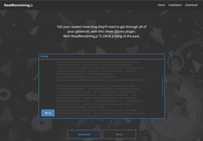
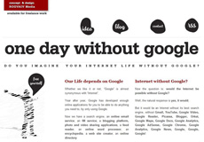

扫一扫微信二维码
扫一扫微信二维码
钱都砸去哪里了，为什么我的网站推广没有效果？ 5个月前•围观热度 3625•经验之谈 二十一世纪，无论是传统互联网，还是移动互联网，都在改变着整个商业的布局，每个行业、每家企业都无法避开这个时代所带来的变革，网站推广几乎成为每个企业必须纳入战略规划的议题。 . . .
终于等到你！千助新版Logo正式启用 1个月前•围观热度 697•千助新闻 成功的改变意味着为成功而改变，经过2个月的分析、设计、讨论、修改，千助的新版Logo终于与大家见面了，正所谓千呼万唤始出来，在新老客户和合作伙伴们的支持下，我们的品牌建设又向前 . . .
值得参考！功能型网站建设架构的全方位规划 3个月前•围观热度 1580•经验之谈 我们知道，设计型网站特别注重视觉效果上的用户体验，而功能型网站建设除了视觉效果之外，还更为注重使用操作上的用户体验。比较有代表性的设计型网站是企业官网，建站目的是宣传公司 . . .
苹果一手缔造的行业“移动互联网”营收或超其自身市值 3个月前•围观热度 1538•行业动态 2008年6月10日，是一个移动互联网发展史上具有特殊意义的纪念日。已故的苹果公司 CEO 史蒂夫 .乔布斯向全球发布了新一代的智能手机 iPhone3G，从此，开创了移动互联网蓬勃发展的新时代 . . .
25May 
留白设计是一种高端艺术，要懂得在网页设计中运用负空间 3个月前•围观热度 1682•经验之谈 所谓留白，是指在网页中除字体本身所占用的版面空间之外的空白处，我们通常也称为“负空间”。实际上，负空间的概念并不仅限于网页设计中，在家装、建筑设计、城市规划、服装设计等领 . . .
国内酷站推荐：太原理工大学的H5响应式官网 3个月前•围观热度 1821•经验之谈 在最近进行的一个中科院项目中，收集了一些国内外高校的官方网站作为参考，这其中，我们特别想推荐太原理工大学的官网设计，与大家来分享。该网站采用了当下较为流行的设计风格，深蓝 . . .
04May 
为你的 UI 选择最好的排版布局 4个月前•围观热度 1182•经验之谈 不可否认，沟通在设计中起着至关重要的作用，无论是网站设计、APP用户界面设计、或是可穿戴设备的UI设计，你的创意必须清楚地表达其意图和目的。用户界面与访客的沟通，可以通过文字、 . . .
可以激发你灵感的一组国外网站设计创意 4个月前•围观热度 1304•经验之谈 设计师的灵感和创意，在网站建设中发挥着重要的作用，我们希望在互联网世界里，发现更多精彩的创意设计。我们相信，那些让人惊叹的高质量网站设计艺术品，存在于世界的各个角落，我们 . . .
国家发改委推行电子政务，微信微博上线运行 4个月前•围观热度 1136•行业动态 来自中华人民共和国国家发展和改革委员会官网4月28日消息：为了更好地通过新媒体发布重要信息，解读重大政策，提供政务服务，接收价格举报，国家发展改革委开通腾讯微信和微博帐号，名 . . .
实体行业还能依赖天猫多久？多地店主被约谈补税 4个月前•围观热度 1085•行业动态 天猫商城作为阿里巴巴旗下，中国最大的电子商务B2C平台，为国内实体行业的互联网化，做出了不可磨灭的贡献，也被很多实体销售企业认作是淘金的平台。然而，在中国电子商务的快速发展、 . . .
建站咨询热线
4006-123-011